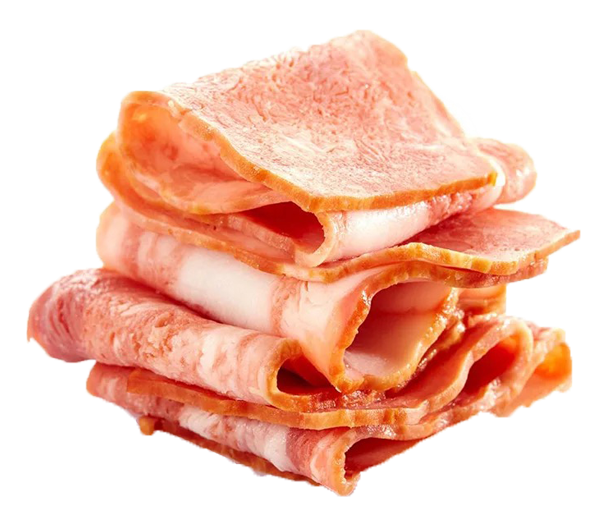
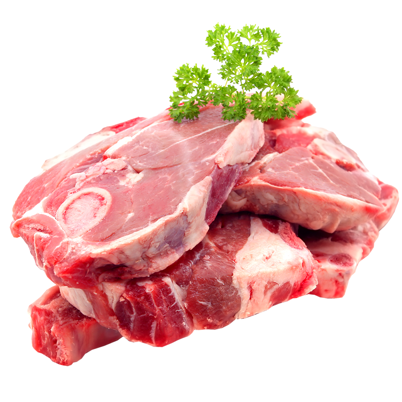
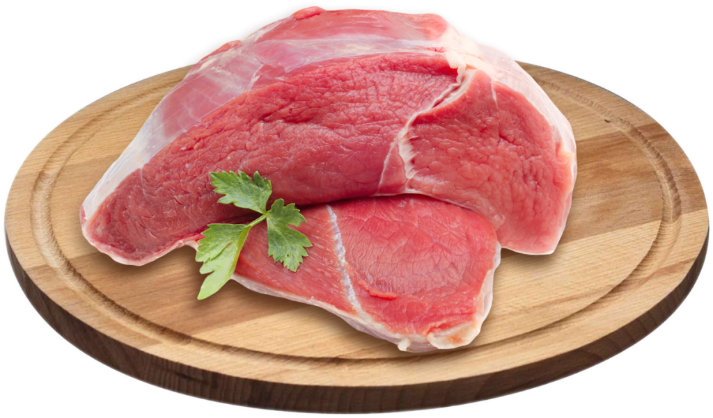
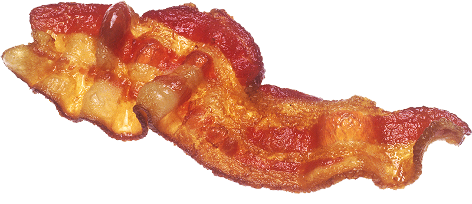

Exploring how the smoky, sizzling joy of bacon can be captured in the elegance of Japanese poetry.
A Haiku for Bacon: Poetry Meets Flavor
Bacon isn’t just food - it’s an experience. The aroma drifts through the kitchen, the sizzle announces its presence, and the taste lingers long after the last bite. Across cultures and cuisines, bacon has become a comfort food, a guilty pleasure, and a symbol of indulgence. But what if we step away from recipes and menus for a moment, and instead look at bacon through the lens of art? That’s where haiku comes in — a minimalist Japanese poetic form designed to capture fleeting moments with clarity and emotion.

What is a Haiku?
This short verse aims to capture three aspects of bacon:
- Morning ritual — Bacon often symbolizes breakfast and the start of the day.
- Sound and scent — The haiku uses sensory cues: the “crackle” and “smoky whispers.”
- Emotional connection — More than taste, it represents comfort, joy, and familiarity.


Why Write a Haiku on Bacon?
Food is deeply tied to memory and culture. Writing poetry about it allows us to explore its impact beyond flavor. Bacon, in particular, is associated with:
- Nostalgia: Many remember waking up to the smell of bacon in the morning.
- Senses: Few foods combine sound, scent, and taste as powerfully.
- Simplicity: Like haiku, bacon is straightforward yet profound in its effect.
By framing bacon in a haiku, we elevate it from a food item to a subject of art - highlighting how something so simple can evoke warmth, happiness, and connection.
Cultural Connection: East Meets West
Haiku originated in Japan as a way to honor fleeting beauty in everyday life. Bacon, while rooted in Western cuisine, represents its own kind of everyday ritual — especially in American breakfasts or European comfort dishes. By blending the two, we bring together different traditions: Eastern minimalism and Western indulgence. This contrast creates a playful yet thoughtful way to celebrate food.


Conclusion
Bacon doesn’t just satisfy hunger; it satisfies the senses and sparks joy. A haiku distills that experience into a few carefully chosen words, reminding us to pause and appreciate the little things. Whether you’re a poetry lover, a foodie, or both, a bacon haiku shows how art and flavor can come together in surprising harmony.